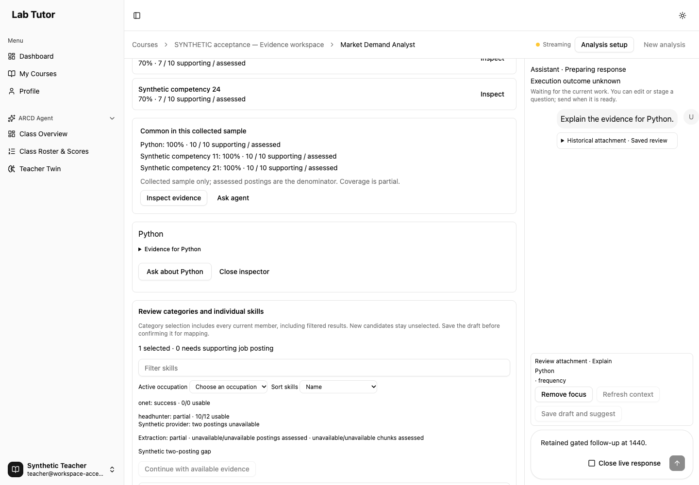
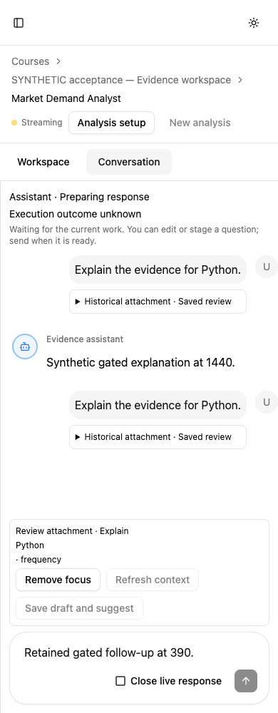
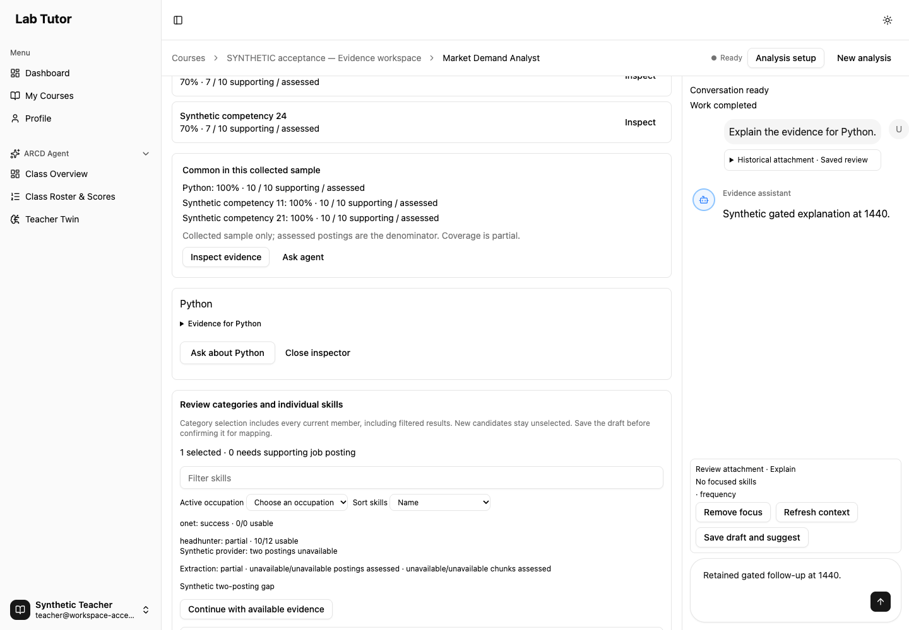
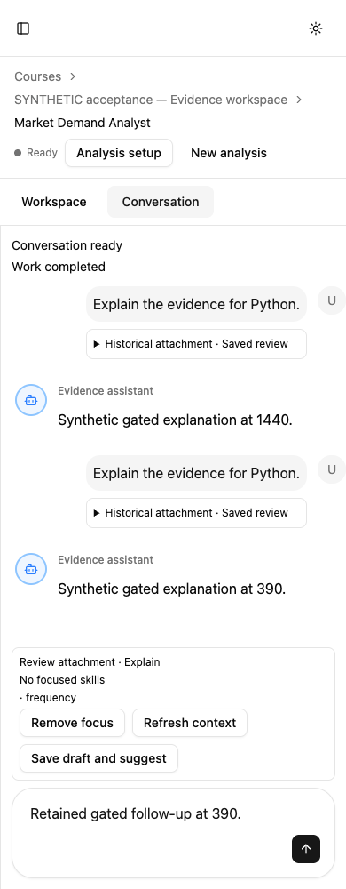

Teacher evidence workspace: final review fixes
Pending typing restored. Metric scale IDs now agree across frontend and backend.
399 backend tests · 546 frontend tests · two actual gated browser cases · lint/build/Ruff/parity passed.
The restored composer now stays editable while a send awaits completion. Existing submission, selection, workflow, reset, configuration and restoration guards remain covered. Backend numerical eligibility rejects wrong or missing scale IDs without modifying stored source metadata. Matching imported values remain unchanged.
What the new browser proof establishes
At 1440px and 390px, the real authenticated app used its routes, repositories, LangGraph nodes and PostgreSQL checkpointer. A fixture-only external-model gate held completion. The harness asserted the textarea enabled before native keyboard input, verified the gate and response remained pending after typing and Enter, and counted exactly one chat POST per case. After release, each reply completed, follow-up text survived and the unchanged submitted focus attachment cleared. No API response mock, disabled-input bypass or fabricated loading state was used.
Gate/network/run facts · SQL: six checkpoints and active thread · Browser console/runtime errors: zero · Fresh owned generation · Exact tested file fingerprints.

Desktop: native follow-up text entered while the model gate remains waiting.
390px Conversation: pending text editable; send guarded.
Desktop after release: follow-up retained, submitted focus cleared.
390px after release: follow-up retained, attachment cleared.Test-first corrections
I1 RED: two integrated userEvent tests failed at the immediate enabled-textarea assertion before their send promise resolved. GREEN: both now type and press Enter while unresolved, verify a single command, then retain the draft after completion. The pending initial-workflow case also rerenders with streaming/busy flags and a newly arrived review.
M1 RED: wrong/missing IM and LV identities returned 4.0 instead of unavailable; the two appended shared-corpus cases also produced backend-only patterns. Six cases failed as expected, matching IDs passed. GREEN: all 107 pattern tests passed. The first 61 literal cases are unchanged; two cases are appended in byte-identical mirrored files. SHA-256 5d79c0d3a0ae565288dc4fbcb56d36dc5adeadf43876ee8059a55d02693dccdf.
Scope and historical limits
This is one bounded final-fix wave on the changed tree based on 064c0355bdda8676b78c11ac324d4b775577b109. The source fingerprints identify the exact uncommitted tree exercised before this fix commit. The full 16-phase lifecycle, previous 391/542 test results, role geometry, metadata, permission, reset and student receipts remain historical with their original heads. They were not replayed here. The previous retained-follow-up fill could auto-wait for response completion and does not establish typing before EOF; the gated proof above resolves that timing limit.
Historical acceptance report and its new timing annotation. This proof uses deterministic external inference and a synthetic fixture; it does not establish provider quality, production throughput or assistive-technology behavior. Actual workflow pending typing is covered by integrated page tests; this bounded browser phase exercises contextual sends.
Failures and warnings retained
The first browser attempt hit the owned API during restart and failed with a socket hang-up before any chat; sanitized original output, failure receipt and capture are retained. After an explicit health wait, the single actual gated phase passed. The initial report QA asserted before historical lazy-loaded images were loaded; the original QA failure remains. Natural scroll/load waits then exercised the same image-completeness assertion. Final headless report QA passed at 1280/390 for both reports. No assertion or timeout was weakened. Backend primary run reports 90 LangGraph deprecation warnings across five callsites. Azure-disabled fixture warnings and the existing build warning for chunks above 500kB are retained. Historical Neo4j Community and asyncpg teardown diagnostics are not claimed resolved.
Verification commands and exits
Each prescribed primary command ran once on the stable changed production tree. Exact commands, exits, times and base HEAD; stdout is sanitized before public write.
Owned cleanup
Exact generation labels, container IDs, SQL ownership comment and private paths were checked before cleanup. The owned API was stopped before graph-clearing backend tests. Three owned containers, two graph anonymous volumes, the dedicated acceptance SQL database and private auth/model/environment files were removed. Original/scoped containers, shared dependency volumes, workspace test database, worktree and scratch remain preserved. Alias and loopback ports are free. Cleanup receipt.
The coordinator owns the one fresh scoped re-review. This report makes no final review or rollout claim.